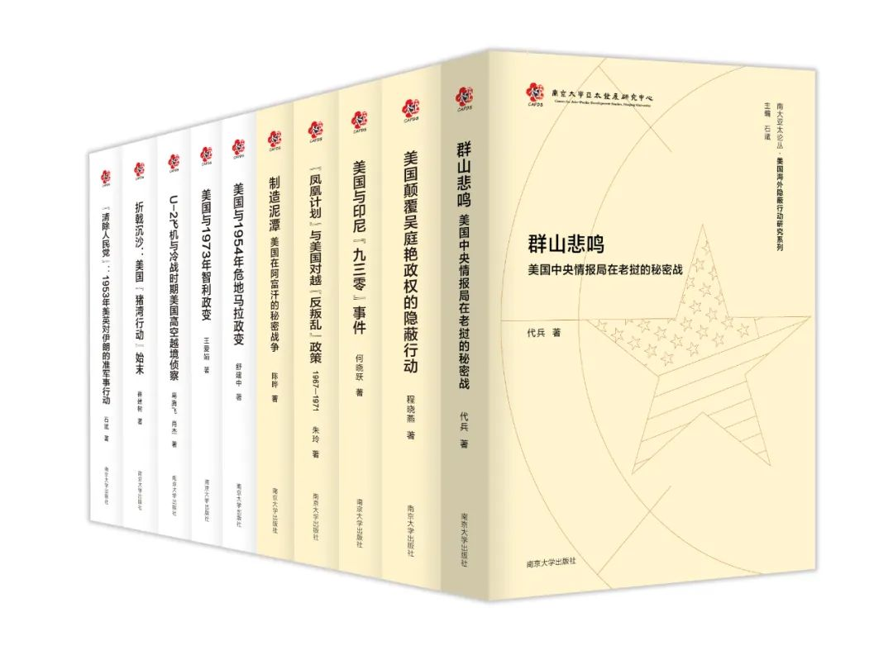

收录于合集
以下文章来源于南京大学出版社 ，作者南大社
南京大学出版社 .
打造碎片化时代深阅读
如同翻开海边的礁石，历史的暗面通过《美国海外隐蔽行动研究系列》丛书得以呈现在我们眼前。作为当前国内冷战史研究的最新成果，丛书以冷战期间美国在世界各地，特别是在过去研究中被忽略的“边缘区域”开展的隐蔽行动为主题，在广泛搜集最新解密档案及相关人物回忆等材料的基础上，打破“美国中心论”的一家之言，客观考察了美国中情局等相关部门谋划、实施各个隐蔽行动的历史细节，并以此追溯与揭露冷战期间外交舞台纵横捭阖背后的汩汩暗流。
从这一主题出发，丛书的各位作者分别选取了自己长期关注和研究的个案，通过厘清各个行动案例的背景、目标、手段与结果，对隐蔽行动这一美国冷战期间的重要战略手段进行深入、细致的研究。
丛书第1辑在推出之后获得了学界与读者的广泛认可。2020年推出的第2辑将目光聚焦到了东南亚和中亚地区，并围绕“美国如何利用隐蔽行动实现冷战目标”这一问题展开论述。5册新书《群山悲鸣：美国中央情报局在老挝的秘密战》《美国颠覆吴庭艳政权的隐蔽行动》《美国与印尼“九三零事件”》《“凤凰计划与美国对越“反叛乱政策””》《制造泥潭：美国在阿富汗的秘密战争》陆续上市，敬请关注。
世界政治波谲云诡、错综复杂。自现代民族国家体系成型以来，国家间关系的常态始终是共识与分歧、合作与冲突、妥协与竞争并存，绝对的和谐或绝对的冲突，都不符合实际。就国际竞争而言，国家可能采用的战略手段与对外政策工具多种多样，有的温和、友好，有的则带有敌意与攻击性；有的公开透明，有的则秘而不宣。既不友好也不公开的对外活动，一般还被统称为“隐蔽行动”。“隐蔽行动”同样种类繁多，按照学术界的一般看法，至少可分为隐蔽宣传行动、隐蔽政治行动、隐蔽经济活动、准军事行动等类型。
对外隐蔽行动，尤其是二战后以来美国等西方国家的对外隐蔽行动，是国际关系史研究，特别是冷战史研究的一个重要领域。这类课题在欧美学术界既属于军事与战略情报史研究的范围，也是国际关系和外交史研究的对象。保罗·肯尼迪、厄内斯特·梅、理查德·伊默曼、约翰·路易斯·加迪斯等著名战略学、国际政治学或国际关系史学者，或多或少都曾从事过这方面的研究和论述。较之西方学者对这一主题的持续关注及其不断问世的大量论著，中国学者所做的努力虽然比过去多了一些，但还非常有限，差距也很明显。
西方大国在冷战时期遍及全球的隐蔽行动，是其对外战略与对外政策的一个重要组成部分。以美国中央情报局等部门为主所进行的对外隐蔽活动，包括对他国的秘密干涉与颠覆活动，以及政治战、心理战、宣传战等等，是美国对外政策与对外行为的一个重要而又特殊的侧面，更是美国冷战政策的一大“特色”。然而过去由于文献史料方面的限制，人们往往一知半解，难闻其详。就冷战时期的相关问题而言，欧美学者从自身的立场和观察角度所得出的结论，自然也需要加以分辨，未可照单全收。自冷战结束以来，美国等东西方相关国家陆续开放了许多原始档案文献，这使我们有可能借助更为全面和可靠的材料，揭开隐蔽活动的神秘面纱，打破陈说、道听途说或西方学者的一家之言，进一步揭示历史真相，弥补国内相关学术空白或研究短板，拓展国际关系和外交史研究的论题与视域，从而有助于对战后以来的国际关系和有关国家的对外政策获得更加全面的认识。
因此，我们决定首先从一些与美国有关的典型案例入手，组织一批来自军队与地方高等院校、科研机构的国际战略、国际关系或外交史学者，共同编纂“美国海外隐蔽行动”专题研究系列。

《美国海外隐蔽行动研究系列》丛书
石 斌 主编
点击“阅读原文” 一键购买
南大亚太论丛·美国海外隐蔽行动研究系列（4册）
为了实现此项研究的初衷，在研究目标、学术规范与编写体例等方面保持必要的一致性，我们希望各位作者在研究和写作的过程中，尽可能遵循以下几项原则。
其一，就研究性质而言，这套系列丛书属于历史案例研究（“案例”在此可以较为宽泛地理解为具有典型意义的事件、政策、计划、行动或议题），研究对象与主题非常明确，故要以叙事为主，议论为辅，紧扣主题，突出重点，主要靠事实与证据说话。
其二，就研究目的而言，要联系相关国际与国内背景，尽可能准确描述事情的来龙去脉，尤其是美国政府有关政策或计划的决策与实施过程，以说明其动因、目标与得失，反映该案例的性质、特点、影响及其相对于其他类似案例所具有的独特性与认识论价值；此外还要注意揭示美国海外隐蔽行动与美国冷战战略、国家安全战略或地区战略之间的联系，并就美国对外政策与对外行为的一些重要特点或一般规律，提出中国学者的独立见解。
其三，在研究方法上，要严格遵循外交史或国际关系史研究之学术规范，立足翔实、可靠的外交档案文献和其他第一手资料，尽可能还原历史真相，纠正错误认识，并力求反映国内外最新研究成果。
其四，在写作风格上，不妨在注重学术性与思想性的同时，兼顾趣味性与可读性，俾使学术著作能够走出书斋，走向大众，为更多的人所赏阅。故篇幅宜短小精悍，语言要简洁生动，惟陈言、赘语、套话之务去。以厘清事情之原委、揭示问题之实质为首要目的，不必连篇累牍，任意敷衍，徒增读者负担。当然，在符合研究宗旨，遵循基本规范的前提下，作者可以也应该有自己的叙事、行文与思想风格。
最后需要说明的是，美国作为一个全球性大国，一向热衷海外干涉，其对外隐蔽行动频率之高、事例之多、影响之大，并世无双。限于研究能力，我们目前所选择的十数个分析案例仅仅是其中一小部分，如果条件允许，还可以逐步扩充。而且，就整体考察乃至战略与理论层面的探讨而言，历史案例研究也还只是一项基础性工作，今后还有大量的工作要做。因此，我们非常希望有更多对此项课题感兴趣的学术同行加入我们的研究队伍。对于此项工作中所存在的缺点与不足，也真诚欢迎学界同仁予以批评和指正。
石 斌2018年1月20日